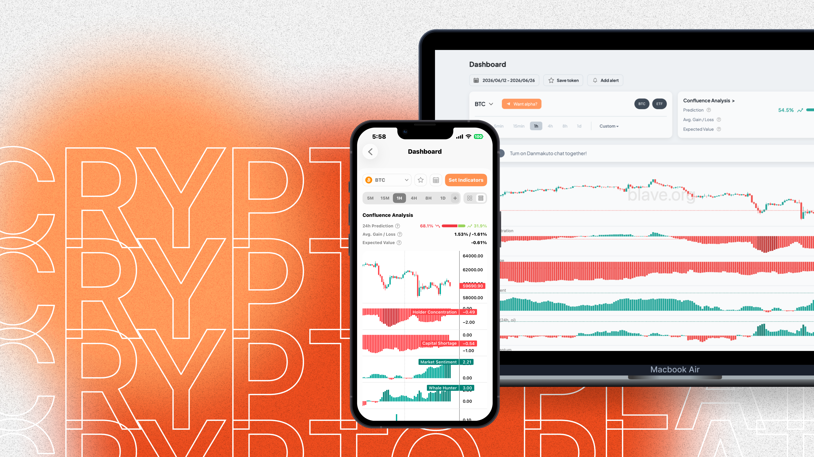
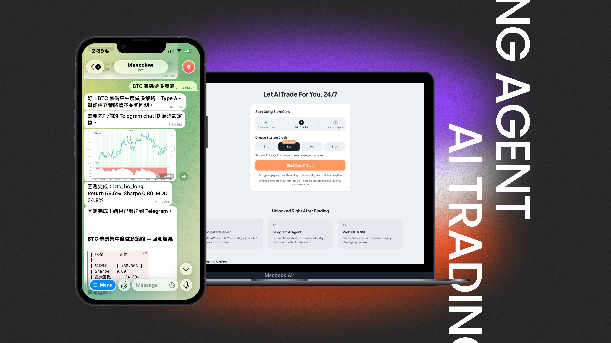

產品案例

跨交易所 Web3 數據平台
協助加密貨幣投資人將複雜的市場數據轉化為可執行的投資決策
市場研究・產品規劃
AI Trading Agent
透過 AI 自動化策略開發與部署，降低量化交易的技術門檻
產品定位・Onboarding 優化
去中心化跟單平台
透過去中心化驗證機制，建立更透明且可信的跟單交易生態系
產品開發・跨部門合作背景與問題
參與去中心化自治組織投票體驗優化專案，透過流程檢視發現一般使用者難以理解交易員績效差異，進而影響投票決策品質。
洞察
為此規劃交易員排行榜頁面，整合報酬率、勝率等關鍵績效指標，並以視覺化方式呈現資訊，協助使用者快速比較不同交易員表現。
做法
同時優化整體投票流程，以新手視角降低參與門檻，讓非專業背景的用戶也能更有依據地完成投票決策。
1 頁
排行榜頁面從無到有
多項指標
視覺化呈現
UI/UX 設計師・介面設計・流程優化・約 3 個月